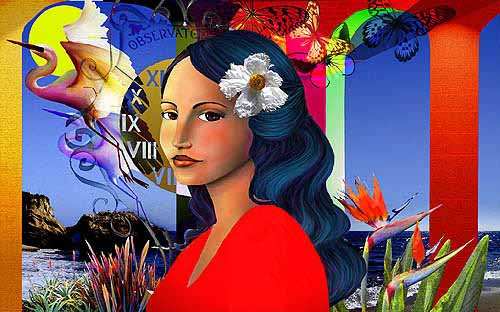

Ileana Frómeta Grillo
DIGITAL COLLAGE
Ileana writes, "The face and stork image in 'The Wonders of Alice' were drawn directly in the computer with Painter 6.0.3. The final assembly of this collage was achieved with Photoshop 5.5, using a combination of digital pictures that were combined with the help of a number of Photoshop filters."
|
 |